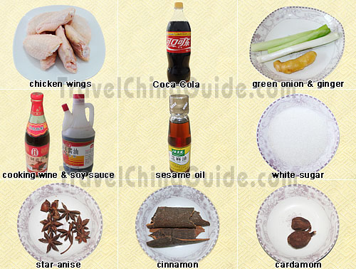
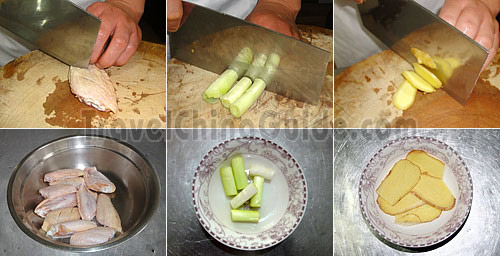
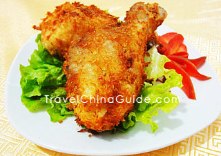
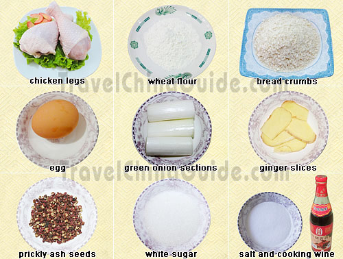

Bourbon Chicken
 Ingredients:
Ingredients:2 lbs boneless chicken breasts, cut into bite-size pieces 1 -2 tablespoon olive oil 1 garlic clove, crushed 1/4 teaspoon ginger 3/4 teaspoon crushed red pepper flakes 1/4 cup apple juice 1/3 cup light brown sugar 2 tablespoons ketchup 1 tablespoon cider vinegar 1/2 cup water 1/3 cup soy sauce Directions:
|
Cola Chicken Wings
 Chinese name:(ke lè ji chì)
Chinese name:(ke lè ji chì)Characteristics: Cola Chicken Wings tastes soft, tender and smooth, with an appetizing caramel color. Cola Chicken Wings is a popular home-style dish in southern China. Chicken wings are rich in fibroblasts which are benefit for blood vessels and skin. They also contain much more vitamin A, necessary for the growth of bones and sperm production, than green peppers. |
|

Ingredients:
4 chicken wings 20 g cola green onion ginger cooking wine soy sauce sesame oil white sugar star anise cinnamon cardamom Note: the amount of the ingredients especially the seasonings listed above can be appropriately used according to one's personal taste. Meanwhile, most of the seasonings used whole above can't be ate, but just used as spices, including cinnamon, bay leaf, star anise, cardamom, dried pimiento, prickly ash seeds.  Preparation:
|
Fried Chicken Legs
|

Chinese name:(cuì zhá ji tui) Characteristics: The outer skin of the Fried Chicken Legs is crispy, golden and fragrant, while the meat inside tastes fresh, tender and smooth. Chicken legs are with thick meat that contains much protein, vitamin A and iron. As the meat is tender when properly cooked, it is easily digestible. So, how to cook it to produce a tasty dish? This is a popular way here in China that compares well with that in the western restaurants. |
|

Ingredients: 2-3 chicken legs 1 egg green onion sections ginger slices wheat flour bread crumbs prickly ash seeds white sugar cooking wine salt Note: the amount of the ingredients especially the seasonings listed above can be appropriately used according to one's personal taste. Preparation: Crack the egg into a plate. Beat well with chopsticks or a spatula. |
|
Methods: Step 1: Wash the chicken legs and put into a small basin. Add in cooking wine, green onion sections, ginger slices, white sugar, salt and prickly ash seeds. Mix them well and marinate for at least one hour. Marinate the Chicken Wings Step 2: Place the steamer pot on the gas cooker. Fill 1/4 full of water and put the steamer basket in. Put the basin with marinated chicken legs on the basket and cover it. Turn on the heat to steam it for a while until the legs are 100% cooked. Turn off the heat and pick them out. Steam the Chicken Legs Step 3: Remove the ginger slices, green onion sections and prickly ash seeds used for steaming. Stick some wheat flour, egg soup and bread crumbs around the steamed legs layer upon layer. Place into the basin again. Coat the Chicken Legs Step 4: Remove the steamer pot and place a wok on the gas cooker instead. Add some coooking oil, and add in the processed chicken legs one by one with chopsticks or the cooking ladle. Turn to medium heat and fry them well until they turn golden. Turn off the heat. Remove them from the wok through a colander. |